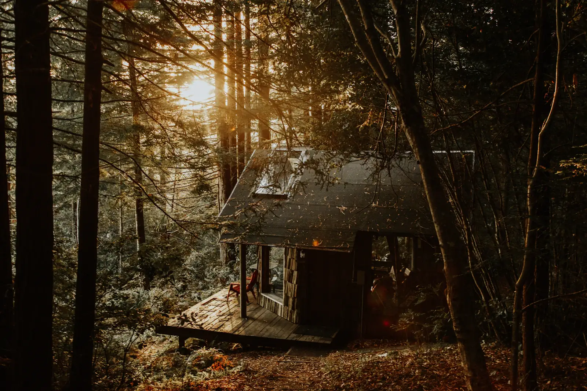
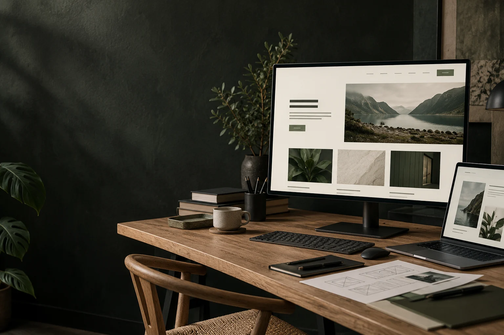
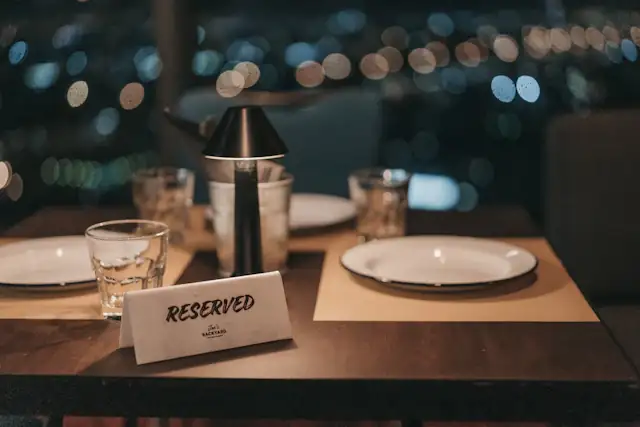
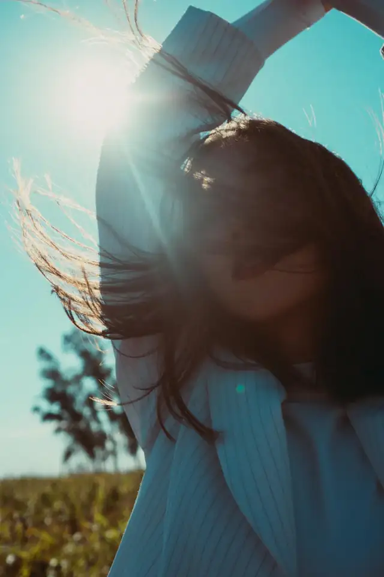
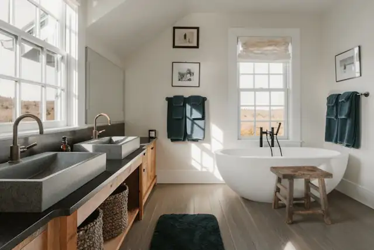
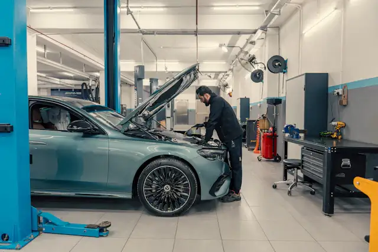

Wreach
Et uttrykk
med egenart.
Vi samler design, innhold og utvikling.
Snakk med ossFra idé til ferdig nettside.
Design, innhold og utvikling — samlet i én helhet.

Nettsider med egenart.
Et gjennomført digitalt førsteinntrykk,
skapt for bedriften din.
Bilde, typografi og farger som henger sammen.
En tydelig meny, forståelig innhold og en vei videre.
De samme elementene. Et oppsett som passer skjermen.

Vi samler design, innhold og utvikling.
Snakk med ossDesign, innhold og utvikling — samlet i én helhet.
Ulike bedrifter trenger ulike uttrykk. Utforsk fire designkonsepter med samme omtanke for innhold, navigasjon og små skjermer.
Kjøkkenet følger sesongen.
En liten nabolagsrestaurant med plass til lange samtaler og råvarer i sesong.

Hår er personlig.
Et rolig rom for nye ideer. Vi finner et uttrykk som passer håret ditt, hverdagen din og deg.

Materialer. Mennesker. Håndverk.
Oppussing, tilbygg og innredning. Vi gjør store planer til oversiktlige prosjekter, ett steg av gangen.

Service / vedlikehold / feilsøking
Forstå hva bilen trenger. Få en oversiktlig plan for service, vedlikehold og veien videre.

Fire designkonsepter. Rull videre, eller velg et uttrykk.
Fiktive virksomheter. Ingen av konseptene er leverte kundeprosjekter.
Vi samler design, innhold og utvikling i én helhet. Slik blir veien fra det du vil si, til det kunden kan gjøre, tydeligere.
Et visuelt uttrykk med riktig tone, tydelig hierarki og plass til det som gjør bedriften din forskjellig.
Visuell retningVi hjelper deg å finne frem til budskapet, prioritere innholdet og gi hver side en tydelig hensikt.
Tekst & innholdsstrukturEn gjennomarbeidet nettside på små og store skjermer, med oversiktlig navigasjon og handlinger som er lette å finne.
Responsiv utviklingBehov for bestilling, integrasjoner eller videre oppfølging? Vi avklarer hva prosjektet trenger før vi bestemmer omfanget. Omfang og pris avtales separat.
SEO og annonsering er planlagt fra februar 2027 og er ikke tilgjengelige ennå.
La oss se på behovet dittVi står bak Wreach. Vi liker den nære dialogen, de gode spørsmålene og detaljene som gjør en nettside til din.
Du trenger ikke ha alle svarene før vi snakker sammen. Vi begynner med bedriften og det du ønsker å få til.
Hvem skal siden nå? Hva skal de finne? Sammen avklarer vi mål, innhold og omfang.
Vi utforsker uttrykk og struktur. Du får se og vurdere retningen før vi bygger videre.
Innhold, design og funksjoner settes sammen. Vi går gjennom opplevelsen på ulike skjermstørrelser.
Vi gjennomgår løsningen sammen og avklarer publisering, overlevering og eventuell videre oppfølging.
Noen spørsmål er fine å få avklart tidlig.
Det avhenger av innhold, omfang og funksjoner. Vi avklarer behovet først, slik at du får et konkret forslag til hva som skal lages og hva det koster.
Nei. Ta med det dere har. Vi kan hjelpe med struktur og innhold, og avtaler hva dere bidrar med og hva vi skal lage.
Ja, vi kan starte med å se på siden dere har. Deretter vurderer vi hva som bør bevares, hva som bør forbedres og hva en eventuell ny løsning krever.
Overlevering og videre oppfølging avtales separat, med eget omfang og pris. Vi blir enige om hvem som gjør hva, slik at det er tydelig hvordan siden skal tas videre.
Har du en idé, en gammel side
eller bare et spørsmål?
Fortell oss litt om bedriften og hva du ønsker å få til. Det er et godt sted å begynne.
Send oss en e-post